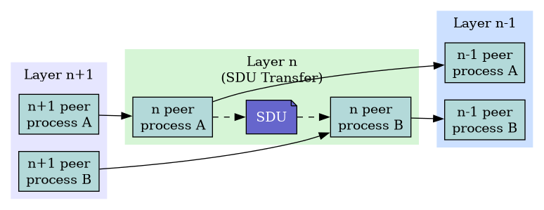
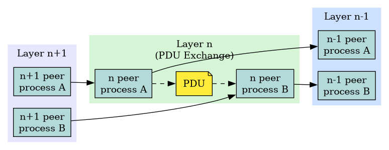

Peer-to-Peer Protocols
Peer-to-peer processes at a given layer cooperate to provide services to the layer above and rely on the services of the layer below.
Key Concepts
- A layer-(n+1) peer process invokes the layer-n protocol.
- It passes Service Data Units (SDUs) downward for transfer.
- Layer-n peers exchange Protocol Data Units (PDUs) horizontally to perform the transfer.
- Each layer provides a service interface upward and uses the service interface below.
SDU Flow
- Layer-(n+1) passes SDUs down to layer-n.
- Layer-n peers interact.

PDU Flow
- Layer-n peers exchange PDUs horizontally.

Network Service Models and Features
Service Models
- Service Model
- Specifies the information transfer service that layer-n provides to layer-(n+1).
- Key Distinction
- The service is either:
- Connection-oriented
- Connectionless
- Quality-of-Service (QoS)
- Requirements specify a level of performance expected during information transfer.
A service model can include the following features:
- Arbitrary message size or structure
- Services restrict the size and
structure of data (e.g., single bit, block of bytes, byte stream).
- Voice Mail: 1 long message.
- Voice Call: Sequence of 1-byte messages (a byte stream).
- Reliability
- Ensures transmission is reliable (no loss or corruption).
- Provided by ARQ protocols which combine error detection, retransmission, and sequence numbering.
- Examples: TCP and HDLC.
- Sequencing
- Ensures messages are delivered in the correct order, without duplication.
- Timing
- Critical for temporal data (voice, video).
- Network transfer introduces delay and jitter.
- Timing Recovery protocols use timestamps and sequence numbering to control delay and jitter.
- Examples: RTP (Real-time Transport Protocol).
- Flow control
- Prevents buffer overflows at the destination.
- Uses backpressure mechanisms to control transfer based on destination buffer availability.
- Examples: TCP and HDLC.
- Multiplexing
- Enables multiple layer-(n+1) users to share a single layer-n service.
- Requires a multiplexing tag to identify specific users at the destination.
- Example: IP.
- (no term)
- Privacy, integrity, and authentication
End-to-End vs. Hop-by-Hop
A service feature can be implemented:
- End-to-End
- Across the entire path from the source to the final destination.
- Hop-by-Hop
- Across every intermediate link/node (hop) in the network.